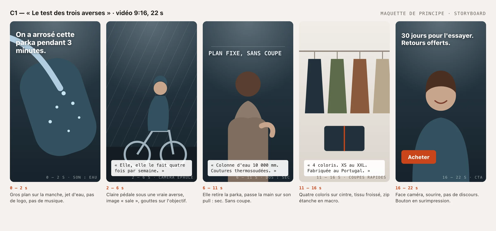
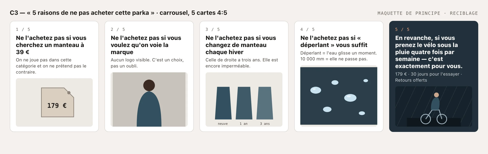

Lisière
Campagne publicitaire Meta
Campagne d'acquisition Parka Brume. Transformer 2 000 € de budget média en commandes mesurables, sur un produit à 179 € qu'on ne peut pas essayer.

Contexte
Marché : France · Période : 14 septembre – 11 octobre 2026 (4 semaines, du lundi au dimanche).
Budget média : 2 000 € — 60 % acquisition / 25 % reciblage / 15 % test créatif.
Objectif : ventes e-commerce · ROAS ≥ 3,5 · CPA ≤ 46,50 €.
Problème identifié
Ce n'est pas un problème de notoriété ni de trafic. LISIÈRE attire des visiteurs qui s'intéressent au produit — le taux d'ajout au panier est correct — mais qui repartent sans acheter et ne reviennent jamais, faute de dispositif de reciblage.
Deux freins expliquent l'essentiel des abandons : l'incertitude sur la taille et le doute sur l'imperméabilité réelle.
Méthodologie
Recherche documentaire sur les repères publicitaires (sources en section F), modèle de tunnel et budget construits en tableur (fichier joint), maquettes de principe des créations, rédaction et mise en page HTML/CSS.
Les éléments sont distingués par trois étiquettes : FICTIF, SOURCÉ et CALCULÉ.
Analyse
Une campagne à objectif Ventes, quatre ensembles de publicités (acquisition large, similaire des acheteurs, reciblage, laboratoire créatif) et trois concepts créatifs répondent chacun à une objection précise.
Le risque principal, assumé et traité : avec 2 000 €, aucun ensemble de publicités n'atteindra les 50 conversions hebdomadaires qui permettent de sortir de la phase d'apprentissage Meta.


Recommandation stratégique
Toute la campagne — audiences, créations, page de destination — est construite pour lever les deux freins, dans cet ordre.
La structure combine acquisition large, similaire 2 % acheteurs, reciblage chaud et laboratoire créatif, avec une rotation pensée pour concentrer le signal.
Livrables
- Brief — entreprise, produit, objectif, cible, problème marketing
- Stratégie publicitaire — objectif Meta et architecture d'audiences
- 3 concepts créatifs et maquettes de principe
- Répartition du budget, calendrier et méthode de test créatif
- Indicateurs, repères de marché et plan d'optimisation
KPI et mesure
Objectifs fixés pour l'exercice : ROAS ≥ 3,5, CPA ≤ 46,50 €, environ 43 commandes attribuées et 7 095 € de chiffre d'affaires. Ce sont des objectifs et des calculs de modèle, pas des résultats de campagne.
Limites du projet
L'entreprise, sa taille, son catalogue, son panier moyen et ses indicateurs internes sont des hypothèses de travail. Les résultats réels dépendraient de l'implémentation, du suivi du traçage et des données de campagne.